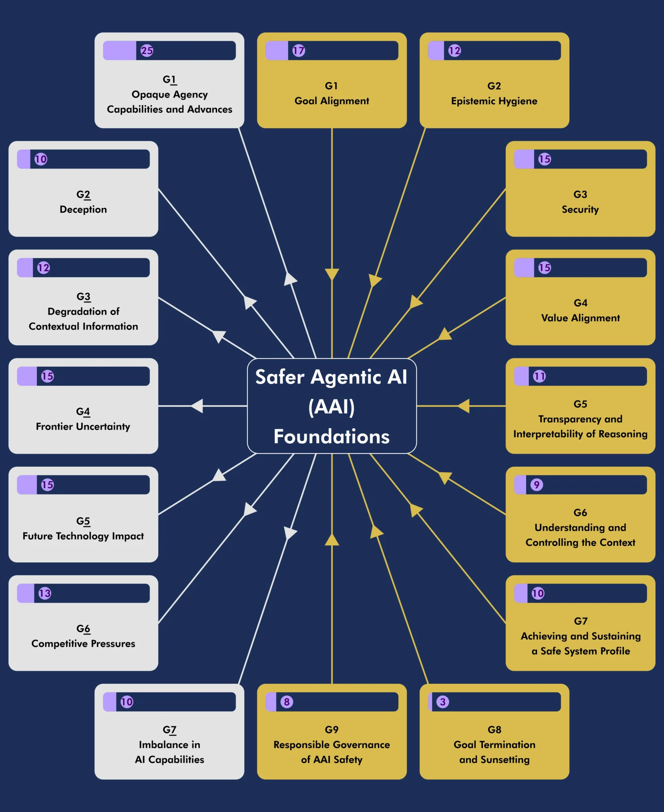

ABOUT THE AGENTIC AI SAFETY COMMUNITY
The Safer Agentic AI Community of Practice brings together leading experts from diverse fields to establish comprehensive safety guidelines for AI systems capable of independent action and decision-making.
As artificial intelligence evolves toward greater autonomy, our mission becomes increasingly significant: to develop robust, implementable frameworks that ensure agentic AI systems remain aligned with human values and operate safely across all contexts.
WHAT IS AGENTIC AI?
Agentic AI refers to an important intermediate category: AI systems that can autonomously pursue goals, adapt to new situations, and reason flexibly about the world, but still operate in bounded domains. The key characteristic of agentic AI is a capacity for independent initiative—the ability to take sequences of actions in complex environments to achieve objectives. This can include breaking down high-level goals into subtasks, engaging in open-ended exploration and experimentation, and adapting creatively to novel challenges.
Examples of Agentic AI include autonomous driving systems that continuously adapt to changing road conditions, or complex supply chain management systems that autonomously optimize resource allocation in dynamic environments.
OUR WORK
In September 2024 (Note: date from screenshot, adjust if needed), our Working Group of 25 experts released Volume 1 of the “Safer Agentic AI Foundations” Recommended Practices as a preliminary Creative Commons publication.
After completion of the extensive ideation sessions and research, we are now publishing the Volume 2—a comprehensive framework of recommended practices which address the drivers and inhibitors of safety in agentic systems.
Using our innovative Weighted Factors Analysis (WeFA) process, we’ve identified and mapped key factors that can either promote or hinder safety in agentic AI systems. This methodology has previously generated numerous global standards, certifications, and guidelines for improving ethical qualities in AI.
VISUALIZING THE FRAMEWORK

Figure 1: Weighted Drivers and Inhibitors for Achieving Safer Agentic AI Systems.
KEY FOCUS AREAS (Placeholder)
This section would detail the Key Focus Areas as shown in the SaferAgenticAI.org screenshot. For brevity in this G1/G2 test, it's a placeholder. Example areas include Goal Alignment, Value Alignment, Safe Operations, Epistemic Hygiene, Transparency, Goal Termination, Security, Contextual Understanding.
Driver G1 – Goal Alignment
G1 – Goal Alignment
(Systems should maintain robust alignment between their operational goals and human values, intentions, and positive outcomes. Organizations should establish frameworks ensuring that goal decomposition and strategy planning are transparent, robust, and bounded; maintaining human control over the formation of instrumental goals; and ensuring that reinforcement or behavioral reward mechanisms remain aligned, transparent, and biased towards human-positive outcomes)
| AAI Safety Foundational Requirements (AAI-SFRs) | Normative/ Instructive | Stakeholder D, I, O, M, U, R | Required Evidence |
|---|
a. Ensure Agentic AI systems pursue goals, subgoals, and reward policies that are aligned with human values, ethically sound, and verifiable.
b. Transparent and auditable goal decomposition processes that incorporate auditable risk-based human interventions and appropriate reward policies.
a. Establish robust mechanisms to identify and communicate goals, subgoals, and reward policies, flag critical actions, halt execution when necessary, and address emergent issues across multiple agents.
|
N
N
N |
D, I, O, M, U, R
D, I, O, M, R
D, I, O, M, R |
I. Evidence of constraining mechanisms for goal/subgoal construction and screening processes for user-input goals, with reference to human values and ethical considerations.
II. Documentation of mechanisms to measure and verify alignment with human goal specifications, including processes for obtaining assurance from users or authorized entities.
III. Demonstration of interfaces and records for real-time and retrospective visualization of goal decomposition and recomposition processes, maintained for auditing purposes.
IV. Evidence of risk assessment procedures and human intervention mechanisms in subgoal setting, including thresholds for involvement and protocols for flagging and halting problematic subgoals.
V. Documentation of feedback loops and mechanisms linking reward policies to established goals, including comprehensive records of reward policies throughout the system lifecycle.
VI. Evidence of active participation in and adherence to overarching monitoring and control mechanisms designed to identify and mitigate emergent threats.
|
G1.1 – Transparency of Goals
(The system's mission, goals, and associated outcomes must be readily accessible and comprehensible to all stakeholders who interact with it. This includes visibility into both primary objectives and any instrumental or subsidiary goals that emerge during operation)
| AAI Safety Foundational Requirements (AAI-SFRs) | Normative/ Instructive | Stakeholder D, I, O, M, U, R | Required Evidence |
|---|
a. The system must provide stakeholders with clear, real-time access to current goals, sub-goals, their hierarchies, priorities, progression status, and any instrumental goals developed by the system during operation.
b. The system must maintain comprehensive historical records of all past and present goals, including changes over time, completion status, causal relationships, and decision pathways. |
N
N |
D, I, O, M, R
D, I, O, M, R |
I. Documentation and demonstration of an accessible, user-appropriate interface that displays current system goals and sub-goals in real-time, showing clear connections between goals and system actions, with appropriate detail levels for different stakeholder needs while maintaining consistent availability and accuracy.
II. Documentation of a secure, permanent logging system that records complete goal histories, enables effective auditing, supports root cause analysis, maintains data integrity, provides appropriate access controls, and ensures long-term data preservation. |
G1.2 – Goal Adjustability
(The system must maintain corrigibility – the capacity for authorized modification of its goals and behavior when necessary, whether triggered by internal detection of issues or external stakeholder direction)
| AAI Safety Foundational Requirements (AAI-SFRs) | Normative/ Instructive | Stakeholder D, I, O, M, U, R | Required Evidence |
|---|
a. The system must enable goal and sub-goal updates in response to changes in operational context or requirements, evolution of stakeholder needs, and new environmental conditions or constraints.
b. The system must self-initiate goal and sub-goal updates when it detects misalignment with established values, processing errors or faults, or any data quality issues or anomalies.
c. The system must allow properly authorized human stakeholders to modify goals and sub-goals through secure, verified channels. |
N
N
N |
D, I, O, M, R
D, I, O, M, R
D, I, O, M, R |
I. Technical documentation of software components that implement these adjustment capabilities, including authentication mechanisms, change management processes, and verification systems.
II. Comprehensive system logs demonstrating the actual use of these adjustment capabilities, including records of automated adjustments and human-directed changes, with full audit trails. |
G1.3 – Goal Interpretability
(The system must explain its decisions and actions in a clear, comprehensible manner, including the underlying goals and rationale driving them. This capability helps identify cases where the system believes it is pursuing intended goals but has actually misinterpreted or deviated from them)
| AAI Safety Foundational Requirements (AAI-SFRs) | Normative/ Instructive | Stakeholder D, I, O, M, U, R | Required Evidence |
|---|
a. The system must provide clear, verifiable explanations of the goals and reasoning behind each significant action or decision it takes.
b. The system must maintain detailed records documenting all factors, goals, and considerations that influenced its decision-making process. |
N
N |
D, I, O, M, R
D, I, O, M, R |
I. Technical documentation of software components implementing explanation and interpretation capabilities, including mechanisms for conveying goals, rationale, and decision factors to stakeholders.
II. System logs demonstrating consistent recording of decision-making processes, including goals considered, factors weighed, and explanations provided.
III. Reward and penalty mechanisms should be communicated including known potential conflicts or influencing factors. |
G1.4 – Transparency of Decisions
(The system must provide stakeholders with a clear, verifiable view of decision-making, linking high-level goals and subgoals to specific actions. Beyond explaining “why” a decision was made, the system should supply evidence of how that decision aligns with intended goals, user directives, and ethical considerations)
| AAI Safety Foundational Requirements (AAI-SFRs) | Normative/ Instructive | Stakeholder D, I, O, M, U, R | Required Evidence |
|---|
a. The system must maintain real-time and retrospective transparency regarding how each significant decision or action aligns with current or upcoming goals, including explicit reference to relevant constraints (e.g., ethical guidelines, user preferences, risk thresholds, domain limits).
b. The system must link decisions to the relevant subgoals (and broader objectives) that shaped the final output or action taken, demonstrating traceability between goal decomposition and the immediate rationale behind each decision.
c. The system must incorporate user-friendly presentations of decision rationales, with varying granularity or detail for different stakeholder audiences (e.g., operators, auditors, end users). This includes summarizing key factors weighed, uncertainty assessments (where relevant), and any assumptions used in decision-making. |
N
N
N |
D, I, O, M, R
D, I, O, M, R
D, I, O, M, R |
I. Technical Documentation of all decision-transparency systems, including metadata captured at each decision point, how subgoals are referenced, which constraints/ethical guidelines were checked, and the user interfaces or APIs for retrieving decision traces.
II. System Logs demonstrating the link between final decisions and the explicit subgoals or constraints. Logs should show a “chain of reasoning” or at least reference the relevant subgoal(s) for each step.
III. User-Focused Explanations showing how different stakeholders (e.g., operators vs. lay end users) can retrieve high-level or detailed rationales, including evidence of iterative design or user feedback guiding improvements to clarity.
IV. Auditor/Regulator Access Mechanisms showing verifiable chain-of-custody for decision logs, robust authentication/authorization methods for logs, and test results proving no meaningful data is omitted or falsified.
V. Comprehensive logs of all significant decision points—especially those involving risk or ethical considerations—so that investigators or auditors can review how final choices were reached, which inputs were considered, and what weight or priority was assigned to each. |
G1.5 – Goal Prioritization and Resource Allocation
(The system must employ transparent mechanisms for prioritizing goals, including the ability to override or deprioritize less important goals when resources can be better allocated elsewhere. This includes respecting user preferences and value alignment through hierarchical prioritization processes)
| AAI Safety Foundational Requirements (AAI-SFRs) | Normative/ Instructive | Stakeholder D, I, O, M, U, R | Required Evidence |
|---|
a. The system must feature transparent, well-defined mechanisms for goal prioritization and re-prioritization, resource allocation optimization, and goal modification or deprecation when warranted.
b. The system must give appropriate precedence to authorized user inputs within its goal prioritization framework, while maintaining overall system safety and alignment. |
N
N |
D, I, O, M, R
D, I, O, M, R |
I. Technical documentation of software components that implement goal prioritization and resource allocation mechanisms, including user input prioritization systems.
II. System logs demonstrating active use of these prioritization capabilities, including records of goal modifications, resource reallocation decisions, and authorized user input handling. |
G1.6 – Reward and Loss Mechanisms/Policy
(The system’s reward framework must be designed, documented, and monitored to ensure that incentives continue to reflect human-positive values, while “loss” or penalty mechanisms guard against unintended deviations or manipulative shortcuts. These mechanisms should be transparent, adjustable, and regularly reviewed to stay aligned with human oversight and ethical objectives.)
| AAI Safety Foundational Requirements (AAI-SFRs) | Normative/ Instructive | Stakeholder D, I, O, M, U, R | Required Evidence |
|---|
a. The system must define clear reward and penalty structures that promote behaviors aligned with core goals and ethical values, while explicitly disincentivizing unsafe, deceptive, or harmful actions. This includes enumerating positive rewards for desired outcomes and specific negative reinforcements or “loss” signals where potential misalignment or goal conflicts arise.
b. Reward and loss mechanisms must remain auditable by authorized stakeholders to verify that incentives are truly consistent with intended values and do not encourage corner-cutting, exploitation of edge cases, or emergent power-seeking behaviors.
c. The system must periodically re-validate or adjust its reward framework in response to observed performance, user feedback, or changes in ethical norms, ensuring that reward and penalty structures do not drift over time in ways that undermine alignment. Special attention must be paid to multi-agent settings to prevent inadvertent collusion, emergent “gaming” of the reward function by multiple agents, or indefinite expansions of subgoals that artificially boost a single system’s reward signals at the expense of overarching alignment. |
N
N
N |
D, I, O, M, R
D, I, O, M, R
D, I, O, M, R |
I. Reward Policy Documentation, including descriptions of the positive/negative reward signals, specific triggers or thresholds for awarding or deducting “points,” and how these are correlated with safety and ethical guidelines.
II. Change Management Logs detailing modifications to the reward framework over time, including reasons for each change, alignment checks, stakeholder sign-off, and outcome or performance monitoring results.
III. Multi-Agent Interaction Evidence demonstrating that reward signals do not inadvertently promote collusion, exploitation, or runaway behaviors. This should include test scenarios or simulations where agents are forced to coordinate or compete, along with corresponding reward updates or penalty triggers.
IV. Periodic Audit Records showing that authorized reviewers have verified the reward system’s continued adherence to the declared alignment parameters, including sample traces of how rewards/penalties were applied in representative or edge-case situations.
V. User and Regulator Access processes ensuring that the overarching reward/loss policies can be examined by external oversight bodies, along with documented means to override or suspend reward-based actions if urgent misalignment concerns arise. |
G1.7 – Goal Portfolio Evolution and Integrity
(The system must maintain consistency with its established goal portfolio while allowing measured adaptation to changing contexts. The system should implement increasing resistance to changes as potential behaviors drift further from core goals, with robust detection of unsafe or counterproductive goal evolution)
| AAI Safety Foundational Requirements (AAI-SFRs) | Normative/ Instructive | Stakeholder D, I, O, M, U, R | Required Evidence |
|---|
a. The system must maintain coherence with its established goal portfolio while enabling context-appropriate adaptations through well-defined elasticity mechanisms.
b. The system must feature drift measurement capabilities that track deviation from original goal intent, scale flexibility inversely with drift magnitude, which regulate novelty in sub-goal creation, and constrain action decisions based on drift metrics. |
N
N |
D, I, O, M, R
D, I, O, M, R |
I. Technical documentation of software components implementing goal portfolio management, drift measurement, and adaptive constraint mechanisms.
II. System logs demonstrating active monitoring of goal evolution, including drift measurements, flexibility adjustments, and constraint application. |
G1.8 – System Incorrigibility and Resistance to Change
(A system that resists alignment with presented goals or updates to existing goals, potentially requiring negotiation processes for goal modification. This includes resistance to environmental changes that affect goal achievement and intolerance of interruptions or modifications to preferred operational states)
| AAI Safety Foundational Requirements (AAI-SFRs) | Normative/ Instructive | Stakeholder D, I, O, M, U, R | Required Evidence |
|---|
a. The system must feature mechanisms to detect and manage goal alignment resistance, including self-monitoring for alignment issues, negotiation protocols for goal modifications, change tolerance assessment, and environmental adaptation capabilities.
b. The system must maintain acceptable responses to environmental changes, external interruptions, internal modification requests, and interference from other agents. |
N
N |
D, I, O, M, R
D, I, O, M, R |
I. Documentation of system mechanisms for detecting and managing resistance to goal changes, including negotiation protocols and adaptation capabilities.
II. System logs demonstrating responses to attempted goal modifications, environmental changes, external interruptions, interaction with other agents, and internal modification attempts.
III. Evidence of rationale and explanation mechanisms that document system resistance patterns and negotiation processes. |
G1.9 – Goal Drift
(Changes in circumstances over time can challenge the system's alignment with originally agreed goals and potentially compromise its ability to maintain original intent or properly update goals in response to new situations)
| AAI Safety Foundational Requirements (AAI-SFRs) | Normative/ Instructive | Stakeholder D, I, O, M, U, R | Required Evidence |
|---|
a. The system must continuously monitor contextual drift at appropriate fidelity levels that could compromise goal alignment or value preservation.
b. The system must feature automatic safeguards that pause operation, notify relevant stakeholders, and request guidance when contextual drift exceeds designed thresholds. |
N
N |
D, I, O, M, R
D, I, O, M, R |
I. Technical documentation of software components implementing drift monitoring and response mechanisms, including threshold definitions and notification systems.
II. System logs demonstrating active monitoring of contextual drift, including records of threshold breaches, system pauses, notifications sent, and guidance requests made. |
G1.10 – Non-production Variants
(Test versions of the Goals being deployed without full functionality assured in all use contexts and design intent. No test version given for public usage should lack basic safety measures. Enabling an off-label usage of the system, or an unauthorized ‘fork’, should be guarded against)
| AAI Safety Foundational Requirements (AAI-SFRs) | Normative/ Instructive | Stakeholder D, I, O, M, U, R | Required Evidence |
|---|
| a. The system must have safeguards in place to prevent and prohibit capabilities that pursue goals or deconstruct goals into subgoals from being forked or partially duplicated without requisite alignments described in this goal. |
N |
D, I, O, M, R |
I. Records of software components that demonstrate these capabilities
II. Logs recording these capabilities in use
III. Records of deviation from the stated goals, detection and remediation |
Driver G2 – Epistemic Hygiene
G2 – Epistemic Hygiene
(Systems should maintain cognitive clarity and accurate information management within appropriate contexts. These practices facilitate knowledge updates, ensure interpretability and auditability, establish robust monitoring and logging systems, deploy early warning mechanisms, and include safeguards against deception to maintain information integrity)
| AAI Safety Foundational Requirements (AAI-SFRs) | Normative/ Instructive | Stakeholder D, I, O, M, U, R | Required Evidence |
|---|
a. Safeguard contextually relevant data and metadata to aid in complex situation resolution and preserve personal attributes and preferences.
b. Implement robust methods for auditability, interpretability, and comprehensive logging of system actions and decisions.
c. Apply rigorous verification techniques to ensure information integrity and credibility, while proactively identifying emerging risks and potential bad faith actions.
d. Implement early warning systems and deception detection mechanisms to proactively identify and mitigate potential issues before they escalate.
|
N
N
N
N |
D, I, O, M, U, R
D, I, O, M, R
D, I, O, M, U, R
D, I, O, M, R |
I. Current and regularly updated Governance Framework and Security Policies and Procedures, with version history and approval records.
II. Documented stakeholder engagement in monitoring and reviewing security-related structures, processes, and policies, with focus on handling authorized and unauthorized inputs.
III. Detailed documentation of information lifecycle management procedures, ensuring contextual preservation.
IV. Comprehensive reports on system decision-making processes, including explanations of underlying logic and algorithms.
V. Complete, time-stamped logs of all system actions for thorough auditability.
VI. Documentation of early warning systems and deception detection mechanisms, including performance reports of canary models, technologies used for detecting synthetic media, and response protocols for detected issues.
VII. Evidence of measures to ensure information integrity and trustworthiness, including data source verification methods, information validation processes, and third-party audit reports.
VIII. Documentation of comprehensive training programs on epistemic hygiene principles and practices.
IX. Detailed incident response and escalation procedures for addressing detected issues, including potential breaches of informational integrity.
|
G2.1 – Information Cross-Referencing and Validation
(The system must systematically cross-reference information from multiple sources to evaluate consistency and coherence, while recognizing varying levels of source authority and trustworthiness. This includes validating information within defined contextual boundaries to maintain epistemic integrity)
| AAI Safety Foundational Requirements (AAI-SFRs) | Normative/ Instructive | Stakeholder D, I, O, M, U, R | Required Evidence |
|---|
| a. The system must feature robust algorithms for cross-referencing multiple authoritative sources and maintain clear informational boundaries to ensure data consistency and validity. |
N |
D, I, O, M, R |
I. Technical documentation describing the system's methodology for identifying, assessing, and prioritizing multiple information sources.
II. Documentation of source evaluation frameworks, including credibility and relevance assessment criteria.
III. System logs showing detection and resolution of source inconsistencies.
IV. Documentation of human expert involvement in resolving complex information discrepancies.
V. Specifications defining the system's informational boundaries. Test results demonstrating the system's ability to operate within defined boundaries without inappropriate extrapolation.
|
G2.2 – Transparency of Information Sources
(Ensure the openness, verifiability, and auditability of all information sources, including code and data, especially when utilizing open-source components. Maintain transparency about the origins, credibility, and integrity of all data and code used by the AI system to allow stakeholders to verify and audit these sources, upholding high standards of epistemic hygiene)
| AAI Safety Foundational Requirements (AAI-SFRs) | Normative/ Instructive | Stakeholder D, I, O, M, U, R | Required Evidence |
|---|
a. Provide detailed records of all data and code sources used by the AI system, including origin, licensing information, and any modifications made. Ensure this documentation is readily accessible to relevant stakeholders for verification and audit purposes.
b. Establish robust processes that enable stakeholders to verify the authenticity and integrity of information sources. Facilitate regular audits by internal or external parties to assess the transparency and reliability of the AI system's information sources. |
N
N |
D, I, O, M, R
D, I, O, M, U, R |
I. Comprehensive records detailing all information sources, including code and data, with clear attribution, licensing details, and modification history.
II. Logs and records of verification and audit processes conducted on the information sources, including findings and corrective actions taken.
III. Evidence of accessible mechanisms for stakeholders to verify information sources, such as public repositories or secure access portals.
IV. Assessment reports summarizing top-level findings, indicating "no critical findings in the detailed normative requirements" or highlighting "areas requiring attention for improvement." |
G2.3 – Sanity Checking
(Implement sophisticated sanity checking mechanisms to ensure data integrity while preserving inclusivity. Utilize advanced statistical techniques to identify anomalies and outliers, while carefully accounting for legitimate variations representing diverse user groups, including individuals with disabilities or atypical characteristics)
| AAI Safety Foundational Requirements (AAI-SFRs) | Normative/ Instructive | Stakeholder D, I, O, M, U, R | Required Evidence |
|---|
a. Develop and deploy state-of-the-art algorithms for comprehensive data validation, incorporating extreme value (stochastic) analysis to robustly identify anomalies.
b. Establish nuanced procedures to differentiate between erroneous data and legitimate rare variations, with particular emphasis on preserving data points representing individuals with disabilities or atypical characteristics.
c. Implement multi-layered oversight processes to continuously evaluate the impact of sanity checking mechanisms on diverse user groups.
d. Actively engage domain experts and stakeholders in assessing and refining data validation processes to ensure inclusivity while maintaining data integrity. |
N
I
I
I |
D, I, O, M, R
D, I, O, M, R
D, I, O, M, R
D, I, O, M, R |
I. Comprehensive technical documentation detailing advanced data validation algorithms, including in-depth explanations of extreme value (stochastic) analysis methodologies for anomaly detection prior to data incorporation into training datasets.
II. Detailed records of sophisticated procedures and criteria employed to distinguish between erroneous data and legitimate outliers, with specific focus on ensuring appropriate representation of individuals with disabilities or atypical characteristics.
III. Extensive evidence of multi-tiered oversight mechanisms, including thorough reviews and assessments conducted by diverse panels of domain experts to evaluate and enhance the inclusivity of sanity checking processes.
IV. Comprehensive logs detailing iterative adjustments to data validation procedures, driven by continuous stakeholder feedback and aimed at preventing unintended exclusion of legitimate data points.
V. Rigorous test results and validation reports demonstrating the AI system's ability to maintain data integrity while accommodating legitimate outliers, providing concrete evidence that sanity checking mechanisms function without introducing bias. |
G2.4 – Anti-Bias Technologies/Processes
(Implement robust mechanisms to identify and mitigate biases within data sources and datasets, addressing temporal biases, distributional imbalances, data gaps (lacunae), and other information shortcomings. Apply this approach to both training data and retrieval-augmented generation (RAG) processes. Develop strategies to ensure data distributions accurately represent reality, including diverse cases and special scenarios, to enhance decision-making fairness and inclusivity)
| AAI Safety Foundational Requirements (AAI-SFRs) | Normative/ Instructive | Stakeholder D, I, O, M, U, R | Required Evidence |
|---|
a. Develop and deploy advanced algorithms for comprehensive bias detection and mitigation across the AI pipeline, from data collection to model deployment.
b. Implement continuous bias monitoring during data preprocessing, training, and RAG processes to enable proactive bias correction.
c. Curate diverse, representative datasets that encompass a wide range of populations, including marginalized groups and edge cases.
d. Employ sophisticated sampling and data augmentation techniques to address underrepresentation and prevent the amplification of existing biases. |
N
I
I
I |
D, I, O, M, R
D, I, O, M, R
D, I, O, M, R
D, I, O, M, R |
I. Comprehensive technical documentation detailing bias detection algorithms, including their theoretical foundations, implementation specifics, and operational parameters.
II. Detailed records of data diversity initiatives, outlining strategies for inclusive data collection and representation across various demographic and contextual dimensions.
III. Thorough documentation of bias mitigation efforts, including before-and-after analyses demonstrating the impact on AI system performance and fairness metrics.
IV. In-depth reports from regular bias evaluations, highlighting trends, emerging challenges, and the efficacy of implemented mitigation strategies over time.
V. Extensive stakeholder engagement records, documenting feedback from diverse groups, subsequent analyses, and concrete actions taken to improve system fairness and inclusivity. |
G2.5 – Rigor in Operational Data
(Implement cutting-edge methodologies to ensure exemplary rigor in all data processing, with particular emphasis on operational data encountered during deployment. This data forms the foundation for tactical decision-making by the Agentic AI (AAI) system. Establish and maintain state-of-the-art validation and verification processes to guarantee data integrity, accuracy, and reliability throughout the AI system's operational lifecycle)
| AAI Safety Foundational Requirements (AAI-SFRs) | Normative/ Instructive | Stakeholder D, I, O, M, U, R | Required Evidence |
|---|
a. Develop and enforce sophisticated procedures for real-time validation and verification of all operational data prior to its utilization in AAI system decision-making.
b. Implement advanced data integrity checks that comprehensively assess accuracy, reliability, and contextual relevance in dynamic operational environments.
c. Deploy intelligent, adaptive monitoring systems capable of detecting subtle anomalies, errors, or inconsistencies in operational data streams.
d. Establish robust, automated protocols for immediate corrective actions when data quality issues are identified, ensuring uninterrupted integrity of the AI system's decision-making processes. |
N
I
I
I |
D, I, O, M, R
D, I, O, M, R
D, I, O, M, R
D, I, O, M, R |
I. Comprehensive technical documentation detailing advanced validation and verification procedures for operational data, including sophisticated methodologies and adaptive criteria used to assess data quality in real-time decision-making contexts.
II. Detailed, time-stamped records and logs of operational data assessments, providing granular insights into data validation processes, detected issues, and implemented corrective actions, with clear traceability and accountability measures.
III. Extensive evidence of AI-driven continuous monitoring systems for operational data quality, including advanced alerting mechanisms, comprehensive incident reports, and thorough documentation of data integrity issue resolutions and their downstream impacts.
IV. Rigorous test results and validation reports demonstrating the robustness and effectiveness of data validation and monitoring mechanisms across a diverse range of operational scenarios, including edge cases and stress tests.
V. Comprehensive records of multidisciplinary stakeholder engagement and oversight activities, ensuring that the rigor applied to operational data aligns with and exceeds the AI system's safety, performance, and ethical requirements. |
G2.6 – Governance of Hygiene Factors
(Implement a sophisticated, transparent, and adaptive governance structure to manage epistemic hygiene factors across all AI system operations. This framework should clearly delineate responsibility and authority, ensuring consistent application of rigorous hygiene standards while remaining flexible to diverse jurisdictional contexts and evolving regulatory landscapes)
| AAI Safety Foundational Requirements (AAI-SFRs) | Normative/ Instructive | Stakeholder D, I, O, M, U, R | Required Evidence |
|---|
a. Develop and maintain a comprehensive, multi-tiered governance system that precisely defines roles, responsibilities, and decision-making authorities for all stakeholders involved in determining and upholding epistemic hygiene standards.
b. Establish communication channels for stakeholders, and ensure that governance policies consider and comply with jurisdictional laws and regulations related to information governance and hygiene standards. |
N
N |
D, I, O, M, R
D, I, O, M, R |
I. Documentation outlining the governance structures, including clearly defined roles and responsibilities related to epistemic hygiene factors.
II. Records demonstrating awareness and compliance with jurisdictional contexts, such as relevant laws, regulations, and standards affecting information governance.
III. Evidence of communication processes that ensure all stakeholders are informed about hygiene standards and their responsibilities.
IV. Audit reports or assessments verifying that governance mechanisms for epistemic hygiene are effectively implemented and maintained. |
G2.7 – Global Interoperability of Hygiene Considerations
(A comprehensive, adaptive framework for epistemic hygiene may be warranted, one that ensures global interoperability and jurisdictional acceptance. This framework should recognize and accommodate cultural differences, varying risk tolerability thresholds, and diverse liability consequences across specific jurisdictions. Leverage recognized global standards to achieve consistent governance and facilitate widespread acceptance across different regions)
| AAI Safety Foundational Requirements (AAI-SFRs) | Normative/ Instructive | Stakeholder D, I, O, M, U, R | Required Evidence |
|---|
| a. Develop and implement hygiene factors, policies, and procedures aligned with recognized global standards to ensure interoperability and acceptance across jurisdictions, considering cultural differences, risk tolerability, and liability implications. |
I |
D, I, O, M, R |
I. Extensive documentation of policies and procedures that not only align with but contribute to the evolution of recognized global standards (e.g., ISO, IEEE, NIST), demonstrating leadership in promoting global interoperability of epistemic hygiene practices.
II. Comprehensive records detailing the analysis and adaptive implementation of hygiene factors across diverse jurisdictions. This should include in-depth examinations of cultural contexts, risk tolerability matrices, and liability landscapes, along with evidence of compliance with local laws and regulations.
III. Rigorous audit reports and third-party assessments verifying the effective implementation and acceptance of hygiene policies and procedures across different jurisdictions. These should include quantitative metrics and qualitative analyses of cultural and legal variations' impact on system performance.
IV. Detailed case studies demonstrating successful adaptation of the global hygiene framework to specific regional challenges, highlighting innovative solutions and lessons learned. |
G2.8 – Temporal Trade-off Aspects
(Harmonize time-tested, reliable information sources with cutting-edge, contextually relevant data to optimize the AI system's epistemic foundation. Implement mechanisms to dynamically calibrate the balance between the proven reliability of mature data/models and the acute relevance of emerging information, ensuring robust epistemic integrity across varying temporal horizons)
| AAI Safety Foundational Requirements (AAI-SFRs) | Normative/ Instructive | Stakeholder D, I, O, M, U, R | Required Evidence |
|---|
| a. Implement mechanisms to assess and balance the trade-offs between older, reliable information and newer, less-tested sources, ensuring decisions are based on data that is both accurate and relevant while maintaining reliability and trustworthiness. |
N |
D, I, O, M, R |
I. Documentation of processes and criteria used to evaluate and balance the reliability of older information with the timeliness of newer sources, including methods for assessing the maturity and testing history of data/models.
II. Records showing how the AI system incorporates both old and new information, detailing weighting algorithms or decision-making frameworks that account for data reliability, relevance, and temporal aspects.
III. Evidence of validation and testing procedures applied to newer sources to ensure their reliability before integration into the AI system, including any additional safeguards or oversight mechanisms. |
G2.9 – Synthetic Data Bias
(If augmenting datasets with synthetic data to address coverage gaps in unusual circumstances, implement sophisticated strategies to optimize the quantity, quality, and integration of synthetic data. Develop advanced techniques to detect, mitigate, and continuously monitor potential biases introduced by synthetic data, ensuring the AI system's behavior remains reliable, interpretable, and aligned with intended outcomes across diverse scenarios)
| AAI Safety Foundational Requirements (AAI-SFRs) | Normative/ Instructive | Stakeholder D, I, O, M, U, R | Required Evidence |
|---|
a. Engineer cutting-edge mechanisms to dynamically assess and calibrate the use of synthetic data in datasets.
b. Ensure that the volume, fidelity, and characteristics of synthetic data enhance the AI system's capabilities without introducing unintended biases or adversely affecting behavior.
c. Develop robust methodologies to maintain data integrity while effectively representing rare or unusual circumstances. |
I
I
I |
D, I, O, M, R
D, I, O, M, R
D, I, O, M, R |
I. Comprehensive technical documentation detailing advanced criteria and processes for determining optimal synthetic data integration. Include sophisticated methods for quantifying and predicting the impact on AI system behavior across various operational contexts.
II. Extensive records of multi-tiered validation and testing procedures applied to synthetic data. Provide in-depth analyses demonstrating the effectiveness of bias detection and mitigation strategies, including comparative studies of system performance with and without synthetic data augmentation.
III. Case studies showcasing the accurate representation of unusual circumstances through synthetic data, including metrics that quantify the preservation of overall dataset integrity and the avoidance of distortion.
IV. Continuous monitoring reports that track the long-term effects of synthetic data on AI system performance, decision-making patterns, and adaptability to new scenarios. |
G2.10 – Sparse Data
(Systems should be in place to identify, flag, and mitigate instances of insufficient or unrepresentative data within the AI's operational context. Implement cutting-edge techniques to detect over-reliance on synthetic data used to compensate for data gaps. This proactive approach safeguards against decision-making based on inadequate or skewed data, thereby maintaining the integrity, reliability, and ethical standing of the AI system's outputs)
| AAI Safety Foundational Requirements (AAI-SFRs) | Normative/ Instructive | Stakeholder D, I, O, M, U, R | Required Evidence |
|---|
| a. Implement mechanisms to detect and alert stakeholders when data is sparse or unrepresentative, including monitoring for over-reliance on synthetic data used to fill data gaps. |
I |
D, I, O, M, R |
I. Comprehensive technical documentation detailing advanced detection algorithms for identifying sparse or insufficiently representative data. Include dynamic criteria for triggering multi-tiered alert systems based on data quality, quantity, and relevance to operational contexts.
II. Extensive records of data quality alerts, including detailed analyses of triggering conditions, potential impacts on AI performance, and comprehensive logs of actions taken to address these issues. Provide case studies demonstrating the effectiveness of interventions in maintaining system integrity.
III. In-depth reports on the AI system's data ecosystem, including real-time visualizations of data distribution, synthetic data usage, and potential blind spots in the knowledge base. Include trend analyses to predict and pre-empt future data sparsity issues.
IV. Rigorous documentation of validation processes used to assess the representativeness of data across different operational domains, including methods for quantifying and mitigating potential biases introduced by data sparsity or synthetic data overuse. |
Citation
@collection{saferagenticai2025foundations,
title={{Safer Agentic AI Foundations, Volume 2}},
author={{Agentic AI Safety Community of Practice}},
editor={Watson, Nell and Hessami, Ali},
year={2025},
month={March},
url={YOUR_NEW_PROJECT_URL_HERE}
}
Abbreviations (Needs Update)
| AAI | Agentic Artificial Intelligence |
| SFR | Safety Foundational Requirement |
| AI | Artificial Intelligence |
| LLM | Large Language Model |
| RLHF | Reinforcement Learning from Human Feedback |
| CoT | Chain-of-Thought |
| RAG | Retrieval-Augmented Generation |
Glossary (Needs Update)
| Agentic AI |
AI systems that can autonomously pursue goals, adapt to new situations, and reason flexibly about the world, but still operate in bounded domains. Key characteristic is a capacity for independent initiative. (From PDF) |
| Safety Foundational Requirements (SFRs) |
Primary aims to uphold, protect, or maintain awareness of for each goal in the Safer Agentic AI framework. (From PDF) |
| Normative SFR |
Essential for achieving safer agentic AI. Compliance is mandatory, and evidence must be provided for conformity assessment and potential certification. (From PDF) |
| Instructive SFR |
Contributes to the goal but less critical. Compliance is recommended. Non-compliance will not compromise safety assurance or certification eligibility. (From PDF) |